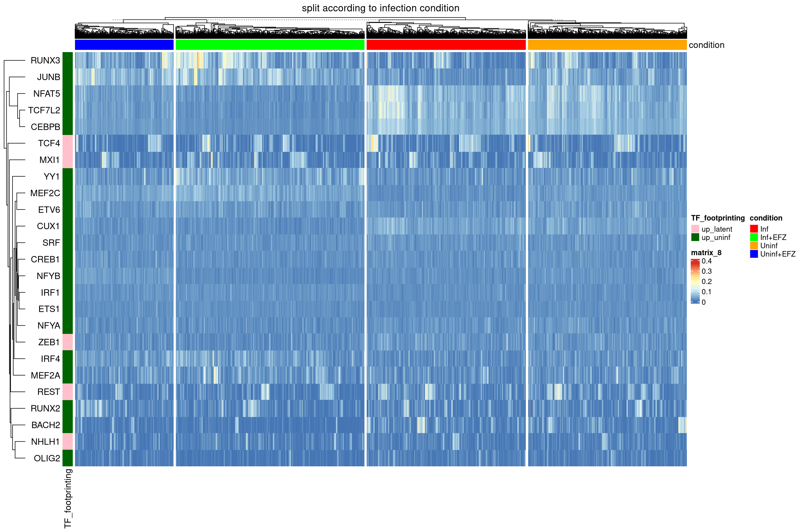
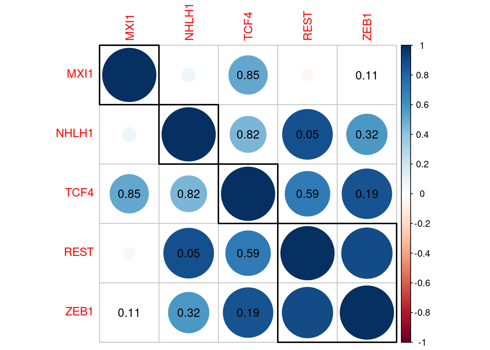

Triculture Dataset GRN with Scenic
kmikulik
2 12 2021
Last updated: 2021-12-18
Checks: 7 0
Knit directory: report/
This reproducible R Markdown analysis was created with workflowr (version 1.6.2). The Checks tab describes the reproducibility checks that were applied when the results were created. The Past versions tab lists the development history.
Great! Since the R Markdown file has been committed to the Git repository, you know the exact version of the code that produced these results.
Great job! The global environment was empty. Objects defined in the global environment can affect the analysis in your R Markdown file in unknown ways. For reproduciblity it’s best to always run the code in an empty environment.
The command set.seed(20211203) was run prior to running the code in the R Markdown file. Setting a seed ensures that any results that rely on randomness, e.g. subsampling or permutations, are reproducible.
Great job! Recording the operating system, R version, and package versions is critical for reproducibility.
Nice! There were no cached chunks for this analysis, so you can be confident that you successfully produced the results during this run.
Great job! Using relative paths to the files within your workflowr project makes it easier to run your code on other machines.
Great! You are using Git for version control. Tracking code development and connecting the code version to the results is critical for reproducibility.
The results in this page were generated with repository version a5b39dc. See the Past versions tab to see a history of the changes made to the R Markdown and HTML files.
Note that you need to be careful to ensure that all relevant files for the analysis have been committed to Git prior to generating the results (you can use wflow_publish or wflow_git_commit). workflowr only checks the R Markdown file, but you know if there are other scripts or data files that it depends on. Below is the status of the Git repository when the results were generated:
Ignored files:
Ignored: analysis/HIV_CSF_dataset_analysis_cache/
Ignored: analysis/Independent_cell_type_identification_Farhadian_dataset_cache/
Ignored: analysis/TF_activity_analysis_of_myeloid2_cluster_cache/
Ignored: analysis/Triculture_dataset_analysis_and_integration_Farhadian_dataset_cache/
Unstaged changes:
Modified: analysis/Independent_cell_type_identification_Farhadian_dataset.Rmd
Modified: analysis/Introduction.Rmd
Modified: analysis/_site.yml
Modified: analysis/html_test.Rmd
Modified: analysis/references.bib
Note that any generated files, e.g. HTML, png, CSS, etc., are not included in this status report because it is ok for generated content to have uncommitted changes.
These are the previous versions of the repository in which changes were made to the R Markdown (analysis/Triculture_dataset_GRN_with_Scenic.Rmd) and HTML (docs/Triculture_dataset_GRN_with_Scenic.html) files. If you’ve configured a remote Git repository (see ?wflow_git_remote), click on the hyperlinks in the table below to view the files as they were in that past version.
| File | Version | Author | Date | Message |
|---|---|---|---|---|
| html | 9ee3086 | Katharina782 | 2021-12-18 | Build site. |
| Rmd | e87fa96 | Katharina782 | 2021-12-16 | new files |
knitr::opts_chunk$set(echo = TRUE, collapse = TRUE, message = FALSE,
cache = TRUE, cache.lazy = FALSE, autodep = TRUE)
set.seed(42)library(tidyverse)
library(Seurat)
library(edgeR)
library(Matrix)
library(data.table)
library(ggplot2)
library(dplyr)
library(ggrepel)
#library(harmony)
library(RColorBrewer)
library(pheatmap)
library(ggcorrplot)
library(ComplexHeatmap)
library(circlize)
library(ggpubr)
library(gridExtra)
library(corrplot)
library(rstatix)
library(knitr)
library(metap)
library(multtest)
library(readxl)GRN inference with SCENIC
- Prepare expression matrix for SCENIC
Because the snakemake pipeline pySCENIC_pipeline (https://github.com/hdsu-bioquant/pySCENIC_pipeline/blob/master/input/gene_exp_mtx_example.tsv) requires an input matrix which has genes as columns and cells as rows I will transpose the matrix.
When referring to differentially bound TFs in primary microglia in the following I am referring to differential binding scores between infection conditions obtained from bulk ATACseq data from primary microglia cell cultures using TOBIAS.
How many of the most Highly Variable Genes (HVG) should I use? Are 3000 enough? No, because then I only get an overlap with differentially bound TFs in primariy microglia of 8 TFs. When using the 10,000 most highly variable genes, SCENIC returns 232 TFs and their corresponding activity score in each cell. 25 of these TFs overlap with differentially bound TFs in primary microglia.
Use only the iMg cells from the triculture dataset (4433 cells in total).
# read in triculture Seurat object
triculture <- readRDS("/media/ag-cherrmann/kmikulik/HIV_microglia/src/Triculture_dataset_Ryan_paper/triculture_clean_seurat_object")
# read in CSF HIV Seurat object
hiv7 <- readRDS("/media/ag-cherrmann/kmikulik/HIV_microglia/src/Reproduce_Farhadian_Paper/Seurat_objects/total_7_samples_label_transfer.rds")
imicroglia <- subset(triculture, cell_type == "iMg")
# use 10 000 most highly variable genes
#scenic <- SCTransform(imicroglia, variable.features.n = 10000, verbose=FALSE)
#saveRDS(scenic, "/media/ag-cherrmann/kmikulik/HIV_microglia/src/Triculture_dataset_Ryan_paper/triculture_scenic")
#scenic <- readRDS("/media/ag-cherrmann/kmikulik/HIV_microglia/src/Triculture_dataset_Ryan_paper/triculture_scenic")
#scenic_hvg <- subset(scenic, features = scenic@assays$SCT@var.features)
#scenic_mtx <- t(scenic_hvg@assays$SCT@scale.data)
#write.table(x = scenic_mtx, file = "/media/ag-cherrmann/kmikulik/HIV_microglia/src/pySCENIC_pipeline/input/triculture_mtx.tsv", sep = "\t")
#scenic_matrix <- read.table(file = "/media/ag-cherrmann/kmikulik/HIV_microglia/src/pySCENIC_pipeline/input/triculture_mtx.tsv", sep = "\t")- AuCell matrix - output from Scenic
The output from SCENIC results is a matrix containing cells as rows and 232 TFs as columns. The TF activity for each cell can be used to draw conclusions about different cell states.
auc_mtx <- read.csv("/media/ag-cherrmann/kmikulik/HIV_microglia/src/Triculture_dataset_Ryan_paper/pySCENIC_output/aucell_img_10k.csv")
auc_mtx <- auc_mtx %>% column_to_rownames("Cell")
auc_mtx <- auc_mtx %>% setnames( old = colnames(auc_mtx), new = sapply(strsplit(
colnames(auc_mtx), "[...]"), `[`, 1))- Combine AuCell Matrix and Seurat object
# add auc matrix to metadata of hiv4 seurat object
tri_mg <- AddMetaData(imicroglia,
metadata = auc_mtx,
col.name = colnames(auc_mtx))Number of cells in each condition
Triculture Dataset
tri_mg@meta.data %>%
group_by(orig.ident) %>%
summarize(n = n()) %>%
kable()| orig.ident | n |
|---|---|
| Inf | 1166 |
| Inf+EFZ | 1382 |
| Uninf | 1163 |
| Uninf+EFZ | 722 |
ATACseq binding scores of TFs between infection conditions in primary microglia
The primary microglia are cells from the C20 cell line which was derived from an HIV+ patient treated with ART (Antiretroviral Therapy). Since the access of ART to the brain is limited due to the blood-brain barrier, the effects of ART on these cells are probably negligible.
- select only 75 TFs with p-values for differential binding scores < 1e-50
- we will focus on TFs which show differential binding scores between latent infection and uninfected conditions in primary microglia
- For 25 of these 75 TFs there is a TF activity score for the induced microglia
- focusing on these 25 TFs we might be able to find activity patterns that correlate with the TF binding scores
- 5 TFs are more bound in latent infection
- 25 TFs are more bound in uninfected cells
Is there a reason why we find more of the TFs more bound in uninfected cells in the TF activity score matrix from SCENIC?
tfs_ana <- read.table("/media/ag-cherrmann/projects/06_HIV_Microglia/data/atacseq/data-2020-11-06/tobias/TOBIAS_snakemake/footprint_mglia2_GlassTF_17-03/TFBS/bindetect_results.txt", sep = "\t", header = TRUE)
top_tfs <- tfs_ana %>% filter(uninf_red_pvalue < 1e-50)
#atac_tfs <- colnames(auc_mtx)[colnames(auc_mtx) %in% top_tfs$name]
# dataframe containing only the 25 Tfs whcih overlap with TF activity matrix from SCENIC
# adding a column with information in which infection condition the TF is more bound
atac_tfs_df <- top_tfs %>% filter(name %in% colnames(auc_mtx)) %>%
mutate(condition = ifelse(uninf_red_change > 0, "up_uninf", "up_latent"))
# List of 5 TFs more bound in latent infection
up_latent <- atac_tfs_df$name[atac_tfs_df$condition == "up_latent"]
# list of 25 TFs more bound in uninfected cells
up_uninf <- atac_tfs_df$name[atac_tfs_df$condition == "up_uninf"]Gosselin TFs
gosselin_tfs <- as.vector(read.table( "/media/ag-cherrmann/kmikulik/HIV_microglia/data/TFs_microglia_Glass_paper.txt")[["V1"]])Heatmap for all TFs
In the heatmap below you can already see a trend towards a separation of cells treated with EFZ (blue and green) from untreated cells (red and orange).
conditions <- tri_mg@meta.data %>%
rownames_to_column("cell") %>%
select("cell", "orig.ident")%>% column_to_rownames("cell")
ht <- Heatmap(t(auc_mtx),
col = colorRampPalette(rev(brewer.pal(n = 7, name = "RdYlBu")))(100),
show_column_names = FALSE,
row_names_side = "left",
top_annotation = HeatmapAnnotation(condition = conditions$orig.ident,
name = "condition", col =
list(condition = c("Uninf" = "orange",
"Inf+EFZ" = "green",
"Inf" = "red",
"Uninf+EFZ" = "blue")))
)
ht
| Version | Author | Date |
|---|---|---|
| 9ee3086 | Katharina782 | 2021-12-18 |
Heatmap of TF activity scores for the 25 TFs with differential binding score
We will now investigate if we can find activity patterns which resemble the differential binding score patterns found in 25 TFs.
Hierarchical clustering with different k
Using hierarchical clustering we migth be able to identify clusters with certain patterns of TF activity. Judging from the different heatmaps, k = 4 might be the most informative, since for k = 5 there is only one TF (NHLH1) differentiating an additional cluster. The plot of within-clusters sum of squares should help to pick the best number of clusters, however as can be seen below there is no obvious kink in the curve.
Hierarchical clustering with k = 2 seems to split the cells into treated vs. untreated cells. These two clusters have a very evident biological meaning. Using k = 3 or k = 4 keeps these two biologically relevant groups separate, but also creates additional clusters which seem to be a mixture of treated and untreated cells. Having a closer look at clusters from k = 4 might give som additional biological insights which is why we will have a closer look at these.
Having a closer look at the four clusters, it becomes evident that the two left most clusters separate treated cells from untreated cells, independent of the infection condition. There are more Inf+EFZ than Uninf+EFZ in the first cluster, however this is in line with the lower cell number of Uninf+EFZ (722 cells) compared to Inf+EFZ (1382 cells).
Two TFs seem to be more active in Inf+EFZ and Uninf+EFZ (compared to Inf and Uninf):
- RUNX3
- JUNB
Three TFs seem to be more active in Inf and Uninf (compared to Inf+EFZ and Uninf+EFZ):
- NFAT%
- TCF7L2
- CEBPB
TCF4 distinguishes a third cluster.
Is there a biological meaning behind that? Maybe we can associate them with a particular condition?
df <- hiv7@meta.data %>% filter(cell_type == "Myeloid2",
orig.ident == "HIV1_CSF")
mtx <- auc_mtx[, atac_tfs_df$name]
# Decide on a k for clustering
wss = sapply(2:15, function(k) {
kmeans(x = t(mtx), centers = k)$tot.withinss
})
plot(2:15, wss, type = "b",
xlab = "Number of clusters k",
ylab = "Total within-clusters sum of square")
| Version | Author | Date |
|---|---|---|
| 9ee3086 | Katharina782 | 2021-12-18 |
ht_list <- map(seq.int(2,6), function(n){
ht <- Heatmap(t(auc_mtx[, atac_tfs_df$name]),
col = colorRampPalette(rev(brewer.pal(n = 7, name = "RdYlBu")))(100),
column_title = paste0("k = ", n),
show_column_names = FALSE,
row_names_side = "left",
top_annotation = HeatmapAnnotation(condition = conditions$orig.ident,
name = "condition",
col = list(condition =
c("Uninf" = "orange",
"Inf+EFZ" = "green",
"Inf" = "red",
"Uninf+EFZ" = "blue"))),
column_km = n,
)
})
ht_list <- ht_list[[1]] + ht_list[[2]] + ht_list[[3]] + ht_list[[4]] + ht_list[[5]]
draw(ht_list, column_title = "Hierarchical clustering with different k", ht_gap = unit(2, "cm"))
| Version | Author | Date |
|---|---|---|
| 9ee3086 | Katharina782 | 2021-12-18 |
ht <- draw(Heatmap(t(auc_mtx[, atac_tfs_df$name]),
col = colorRampPalette(rev(brewer.pal(n = 7, name = "RdYlBu")))(100),
column_title = "hierarchical clustering with k = 4",
show_column_names = FALSE,
row_names_side = "left",
top_annotation = HeatmapAnnotation(condition = conditions$orig.ident,
name = "condition",
col = list(condition =
c("Uninf" = "orange",
"Inf+EFZ" = "green",
"Inf" = "red",
"Uninf+EFZ" = "blue"))),
column_km = 4,
))
| Version | Author | Date |
|---|---|---|
| 9ee3086 | Katharina782 | 2021-12-18 |
Separate Heatmaps according to infection condition
Separating the cells according to different conditions it becomes very evident, that there is a bigger difference between cells treated with EFZ vs. untreated cells than between infected vs uninfected cells. The Inf+EFZ (green) and Uninf+EFZ (blue) show very similar TF activity patterns and the Inf (red) and Uninf (orange) show very similar TF activity patterns. These findings represent the findings from above
Two TFs seem to be more active in Inf+EFZ and Uninf+EFZ (compared to Inf and Uninf):
- RUNX3
- JUNB
Three TFs seem to be more active in Inf and Uninf (compared to Inf+EFZ and Uninf+EFZ):
- NFAT5: In microglia cells inflammatory signals trigger NFAT5 expression. (Yang X.L. et al., Dev Neurosci, 2018)
- TCF7L2
- CEBPB
Especially the TFs NFAT5, TCF7L2 and CEBPB seem to be more active in untreated cells:
- CEBPB regulates pro-inflammatory gene expression, increased expression in HAND (HIV-associated neurocognitive disorder), BUT no data from microglia (Canchi S. et al. J Neuroinflammation, 2020)
- NFAT5
ht_conditions <- Heatmap(t(auc_mtx[, atac_tfs_df$name]),
#col = colorRampPalette(rev(brewer.pal(n = 7, name = "RdYlBu")))(100),
column_title = "split according to infection condition",
show_column_names = FALSE,
row_names_side = "left",
col = colorRampPalette(rev(brewer.pal(n = 7, name = "RdYlBu")))(100),
top_annotation = HeatmapAnnotation(condition = conditions$orig.ident,
name = "condition", col = list(condition = c("Uninf" = "orange", "Inf+EFZ" = "green", "Inf" = "red", "Uninf+EFZ" = "blue"))),
#row_km = 2,
#row_split = atac_tfs_df$condition,
column_split = tri_mg$orig.ident,
left_annotation = rowAnnotation(TF_footprinting = (atac_tfs_df %>%
select(name, condition) %>%
column_to_rownames("name"))[["condition"]],
name = "TF_footprinting",
col = list(TF_footprinting = c("up_latent" = "pink",
"up_uninf" = "darkgreen")))
)
ht_conditions 
| Version | Author | Date |
|---|---|---|
| 9ee3086 | Katharina782 | 2021-12-18 |
Separate Heatmaps according to TF binding scores from ATACseq data
Separating the heatmap along the rows, according to TFs either more bound in latently infected microglia or more bound in uninfected primary microglia, does not result in a separation according to treatment with EFZ. Therefore, the heatmap below might yield additional biological insights.
What one might expect to see, is that TFs more bound in uninfected primary microglia would also show higher activity in uninfected iMg, while TFs more bound in latently infected primary microglia would show higher activity in Inf+EFZ iMg. However, such a pattern is not immediately visible in the heatmap below.
ht_tfs1 <- Heatmap(t(auc_mtx[, atac_tfs_df$name]),
#col = colorRampPalette(rev(brewer.pal(n = 7, name = "RdYlBu")))(100),
column_title = "split according to TF binding score for latent vs. uninfected",
show_column_names = FALSE,
row_names_side = "left",
#column_km = 4,
row_split = atac_tfs_df$condition,
col = colorRampPalette(rev(brewer.pal(n = 7, name = "RdYlBu")))(100),
top_annotation = HeatmapAnnotation(condition = conditions$orig.ident,
name = "condition",
col = list(condition =
c("Uninf" = "orange",
"Inf+EFZ" = "green",
"Inf" = "red",
"Uninf+EFZ" = "blue"))),
#column_split = tri_mg$orig.ident
left_annotation = rowAnnotation(TF_footprinting =
(atac_tfs_df %>%
select(name, condition) %>%
column_to_rownames("name"))[["condition"]],
name = "TF_footprinting",
col = list(TF_footprinting = c("up_latent" = "pink",
"up_uninf" = "darkgreen")))
)
#ht_list <- ht_conditions + ht_tfs
#draw(ht_list)ht_tfs2 <- Heatmap(t(auc_mtx[, atac_tfs_df$name]),
#col = colorRampPalette(rev(brewer.pal(n = 7, name = "RdYlBu")))(100),
column_title = "split according to TF binding score for latent vs. uninfected",
show_column_names = FALSE,
row_names_side = "left",
#column_km = 4,
row_split = atac_tfs_df$condition,
column_split = tri_mg@meta.data$orig.ident,
col = colorRampPalette(rev(brewer.pal(n = 7, name = "RdYlBu")))(100),
top_annotation = HeatmapAnnotation(condition = conditions$orig.ident,
name = "condition", col =
list(condition =
c("Uninf" = "orange",
"Inf+EFZ" = "green",
"Inf" = "red",
"Uninf+EFZ" = "blue"))),
#column_split = tri_mg$orig.ident
left_annotation = rowAnnotation(TF_footprinting =
(atac_tfs_df %>%
select(name, condition) %>%
column_to_rownames("name"))[["condition"]],
name = "TF_footprinting",
col = list(TF_footprinting = c("up_latent" = "pink",
"up_uninf" = "darkgreen")))
)
ht_list <- ht_tfs1 + ht_tfs2
draw(ht_list, ht_gap = unit(2, "cm"))
| Version | Author | Date |
|---|---|---|
| 9ee3086 | Katharina782 | 2021-12-18 |
Statistical Tests to find TF activity differences between clusters
To quantitatively investigate whether we can find TFs which have significantly different activity between clusters we can use Kruskal-Wallis test and pairwise wilcox test as a posthoc analysis.
p_values <- map(seq.int(1:length(colnames(auc_mtx))), function(n){
tf <- colnames(auc_mtx)[n]
#print(tf)
#print(triculture@meta.data[tf])
p_values <- unlist(kruskal.test(pull(tri_mg@meta.data[tf]) ~ orig.ident,
tri_mg@meta.data))["p.value"]
#print(p_values)
#list(tf = tf, p_value = p_values)
})
# adjust for multiple hypothesis testing
adj_p_values <- p.adjust(as.numeric(unname(unlist(p_values))), method = "fdr")
# how many transcription factors are significantly different between the clusters?
length(adj_p_values[adj_p_values<0.01])
[1] 206
## [1] 16Boxplots of TFs activity across conditions of TFs more bound in latent infection
There is a very small or none significant difference between the TF activity between Inf and Uninf as well as between Inf+EFZ and Uninf+EFZ. However, between the treatment conditions there is a difference for REST, ZEB1 and TCF4. However, there is no clear pattern observed.
boxplot_list <- map(up_latent, function(tf) {
ggplot() +
geom_boxplot(aes(x = tri_mg@meta.data %>% pull("orig.ident"),
y = tri_mg@meta.data %>% pull(tf),
fill = tri_mg@meta.data %>% pull("orig.ident"))) +
stat_pvalue_manual(tri_mg@meta.data %>%
pairwise_wilcox_test(as.formula(paste0(tf, " ~ orig.ident"))) %>%
add_xy_position()) +
xlab("Condition") +
ylab(paste0(tf)) +
guides(fill = guide_legend(title = "condition"))
})
do.call(gridExtra::grid.arrange, c(boxplot_list, ncol = 3, nrow = 2))
| Version | Author | Date |
|---|---|---|
| 9ee3086 | Katharina782 | 2021-12-18 |
Boxplots of TFs activity across conditions of TFs more bound in uninfected primary microglia
In the plots below the trend of TF activity being negatively correlated between treated and untreated cells, independent of the infection status can be seen for some TFs, for example CEBPB and MEF2C. For other TFs there is no difference between either infection status or treatment, for example CREB1 and ETS1.
One assumption migth be, that TFs which are markers of microglia cells might be more or less active depending on whether the cells were treated with EFZ or not. An argument against this assumption is that both CEBPB and MEF2C are typically expressed in microglia, yet we observe an opposite trend. CEBPB is more active in Inf and Uninf cells than in Inf+EFZ and Uninf+EFZ cells, while MEF2C is more active in Inf+EFZ and Uninf+EFZ cells than in Inf and Uninf cells.
boxplot_list <- map(up_uninf, function(tf) {
ggplot() +
geom_boxplot(aes(x = tri_mg@meta.data %>% pull("orig.ident"),
y = tri_mg@meta.data %>% pull(tf),
fill = tri_mg@meta.data %>% pull("orig.ident"))) +
stat_pvalue_manual(tri_mg@meta.data %>%
pairwise_wilcox_test(as.formula(paste0(tf, " ~ orig.ident"))) %>%
add_xy_position()) +
xlab("Condition") +
ylab(paste0(tf)) +
guides(fill = guide_legend(title = "condition"))
})
do.call(gridExtra::grid.arrange, c(boxplot_list, ncol = 5, nrow = 4))
| Version | Author | Date |
|---|---|---|
| 9ee3086 | Katharina782 | 2021-12-18 |
#annotate_figure(figure,
# top = text_grob("TFs activity across conditions for TFs more bound in uninfected primary microglia", size = 20))Correlations between conditions
cor_mtx <- tri_mg@meta.data %>%
rownames_to_column("cell") %>%
select(c("cell", "orig.ident", colnames(auc_mtx))) %>%
group_by(orig.ident) %>%
summarize_if(is.numeric, mean) %>%
gather(TF, value, -orig.ident) %>%
spread(orig.ident, value) %>%
column_to_rownames("TF") %>% cor()
testCor <- cor.mtest(cor_mtx, conf.level = 0.95)
# plot correlations
# p.mat = matrix of p_values
corrplot(cor_mtx,method = "color", order = "hclust",
addrect = 4, # add boxes
p.mat = testCor$p,
#sig.level = .05,
insig = "p-value")
| Version | Author | Date |
|---|---|---|
| 9ee3086 | Katharina782 | 2021-12-18 |
Correlations between Tfs
cor_mtx <- tri_mg@meta.data %>%
rownames_to_column("cell") %>%
select(c("cell", "orig.ident", atac_tfs_df$name)) %>% # only TFs with differential binding scores from ATACseq
group_by(orig.ident) %>%
summarize_if(is.numeric, mean) %>%
column_to_rownames("orig.ident") %>% cor()
testCor <- cor.mtest(cor_mtx, conf.level = 0.95)
corrplot(cor_mtx,method = "color", order = "hclust",
addrect = 4, # add boxes
p.mat = testCor$p,
insig = "p-value")
| Version | Author | Date |
|---|---|---|
| 9ee3086 | Katharina782 | 2021-12-18 |
TFs more bound in uninfected primary microglia
cor_mtx <- tri_mg@meta.data %>%
rownames_to_column("cell") %>%
select(c("cell", "orig.ident", up_uninf, "REST")) %>% # only TFs with differential binding scores from ATACseq
group_by(orig.ident) %>%
summarize_if(is.numeric, mean) %>%
column_to_rownames("orig.ident") %>% cor()
testCor <- cor.mtest(cor_mtx, conf.level = 0.95)
corrplot(cor_mtx,method = "color", order = "hclust",
addrect = 4, # add boxes
p.mat = testCor$p,
insig = "p-value")
| Version | Author | Date |
|---|---|---|
| 9ee3086 | Katharina782 | 2021-12-18 |
TFs more bound in latent infection
cor_mtx <- tri_mg@meta.data %>%
rownames_to_column("cell") %>%
select(c("cell", "orig.ident", up_latent, "REST")) %>% # only TFs with differential binding scores from ATACseq
group_by(orig.ident) %>%
summarize_if(is.numeric, mean) %>%
column_to_rownames("orig.ident") %>% cor()
testCor <- cor.mtest(cor_mtx, conf.level = 0.95)
corrplot(cor_mtx,method = "color", order = "hclust",
addrect = 4, # add boxes
p.mat = testCor$p,
insig = "p-value")
| Version | Author | Date |
|---|---|---|
| 9ee3086 | Katharina782 | 2021-12-18 |
TFs differntiating Myeloid2 clusters
These TFs were differntially active between the three hierarchical clusters in Myeloid2 cells from HIV-infected patients. Across three different patients they showed correlated changes in activity.
- YY1, ETS1 and REST were positively correlated with each other and negatively correlated with MEF2A, ETV6, JUNB, MEF2C, MXI1 and CEBPB.
- The pattern observed for the iMg from the triculture dataset does not resemble the pattern observed in Myeloid2 cells.
intersect_csf <- read.table("/media/ag-cherrmann/kmikulik/HIV_microglia/data/atac_intersect_TFs_different_across_patients_3_clusters")
cor_mtx <- tri_mg@meta.data %>%
rownames_to_column("cell") %>%
select(c("cell", "orig.ident", intersect_csf$x[intersect_csf$x %in% colnames(auc_mtx)])) %>% # only TFs with differential binding scores from ATACseq
group_by(orig.ident) %>%
summarize_if(is.numeric, mean) %>%
column_to_rownames("orig.ident") %>% cor()
testCor <- cor.mtest(cor_mtx, conf.level = 0.95)
corrplot(cor_mtx,method = "color", order = "hclust",
addrect = 4, # add boxes
p.mat = testCor$p,
insig = "p-value")
| Version | Author | Date |
|---|---|---|
| 9ee3086 | Katharina782 | 2021-12-18 |
sessionInfo()
R version 4.0.2 (2020-06-22)
Platform: x86_64-pc-linux-gnu (64-bit)
Running under: CentOS Linux 7 (Core)
Matrix products: default
BLAS/LAPACK: /usr/lib64/libopenblasp-r0.3.3.so
locale:
[1] LC_CTYPE=en_US.UTF-8 LC_NUMERIC=C
[3] LC_TIME=en_US.UTF-8 LC_COLLATE=en_US.UTF-8
[5] LC_MONETARY=en_US.UTF-8 LC_MESSAGES=en_US.UTF-8
[7] LC_PAPER=en_US.UTF-8 LC_NAME=C
[9] LC_ADDRESS=C LC_TELEPHONE=C
[11] LC_MEASUREMENT=en_US.UTF-8 LC_IDENTIFICATION=C
attached base packages:
[1] parallel grid stats graphics grDevices utils datasets
[8] methods base
other attached packages:
[1] readxl_1.3.1 multtest_2.46.0 Biobase_2.50.0
[4] BiocGenerics_0.36.1 metap_1.6 knitr_1.30
[7] rstatix_0.6.0 corrplot_0.92 gridExtra_2.3
[10] ggpubr_0.4.0 circlize_0.4.13 ComplexHeatmap_2.9.4
[13] ggcorrplot_0.1.3 pheatmap_1.0.12 RColorBrewer_1.1-2
[16] ggrepel_0.9.1 data.table_1.14.2 Matrix_1.3-4
[19] edgeR_3.32.0 limma_3.46.0 SeuratObject_4.0.3
[22] Seurat_4.0.5 forcats_0.5.0 stringr_1.4.0
[25] dplyr_1.0.7 purrr_0.3.4 readr_1.4.0
[28] tidyr_1.1.2 tibble_3.1.6 ggplot2_3.3.5
[31] tidyverse_1.3.0 workflowr_1.6.2
loaded via a namespace (and not attached):
[1] utf8_1.2.2 reticulate_1.22 tidyselect_1.1.1
[4] htmlwidgets_1.5.4 Rtsne_0.15 munsell_0.5.0
[7] mutoss_0.1-12 codetools_0.2-18 ica_1.0-2
[10] future_1.23.0 miniUI_0.1.1.1 withr_2.4.3
[13] colorspace_2.0-2 highr_0.8 rstudioapi_0.13
[16] stats4_4.0.2 ROCR_1.0-11 ggsignif_0.6.0
[19] tensor_1.5 listenv_0.8.0 labeling_0.4.2
[22] Rdpack_2.1.2 git2r_0.27.1 mnormt_2.0.2
[25] polyclip_1.10-0 farver_2.1.0 rprojroot_2.0.2
[28] TH.data_1.0-10 parallelly_1.29.0 vctrs_0.3.8
[31] generics_0.1.1 xfun_0.29 R6_2.5.1
[34] doParallel_1.0.16 clue_0.3-60 locfit_1.5-9.4
[37] spatstat.utils_2.2-0 assertthat_0.2.1 promises_1.2.0.1
[40] scales_1.1.1 multcomp_1.4-15 gtable_0.3.0
[43] globals_0.14.0 goftest_1.2-3 sandwich_3.0-0
[46] rlang_0.4.12 GlobalOptions_0.1.2 splines_4.0.2
[49] lazyeval_0.2.2 spatstat.geom_2.3-0 broom_0.7.2
[52] yaml_2.2.1 reshape2_1.4.4 abind_1.4-5
[55] modelr_0.1.8 backports_1.2.0 httpuv_1.6.3
[58] tools_4.0.2 ellipsis_0.3.2 spatstat.core_2.3-1
[61] ggridges_0.5.2 TFisher_0.2.0 Rcpp_1.0.7
[64] plyr_1.8.6 rpart_4.1-15 deldir_1.0-6
[67] pbapply_1.5-0 GetoptLong_1.0.5 cowplot_1.1.1
[70] S4Vectors_0.28.1 zoo_1.8-9 haven_2.3.1
[73] cluster_2.1.0 fs_1.5.1 magrittr_2.0.1
[76] magick_2.5.2 scattermore_0.7 openxlsx_4.2.3
[79] lmtest_0.9-39 reprex_0.3.0 RANN_2.6.1
[82] tmvnsim_1.0-2 mvtnorm_1.1-1 whisker_0.4
[85] fitdistrplus_1.1-6 matrixStats_0.61.0 hms_1.1.1
[88] patchwork_1.1.1 mime_0.12 evaluate_0.14
[91] xtable_1.8-4 rio_0.5.16 IRanges_2.24.1
[94] shape_1.4.6 compiler_4.0.2 KernSmooth_2.23-18
[97] crayon_1.4.2 htmltools_0.5.2 mgcv_1.8-33
[100] later_1.3.0 lubridate_1.7.9.2 DBI_1.1.1
[103] dbplyr_2.0.0 MASS_7.3-53 car_3.0-10
[106] cli_3.1.0 rbibutils_2.2.4 igraph_1.2.9
[109] pkgconfig_2.0.3 sn_2.0.1 numDeriv_2016.8-1.1
[112] foreign_0.8-80 plotly_4.9.2.1 spatstat.sparse_2.0-0
[115] xml2_1.3.2 foreach_1.5.1 rvest_0.3.6
[118] digest_0.6.29 sctransform_0.3.2 RcppAnnoy_0.0.19
[121] spatstat.data_2.1-0 rmarkdown_2.6 cellranger_1.1.0
[124] leiden_0.3.5 uwot_0.1.10 curl_4.3.2
[127] shiny_1.7.1 rjson_0.2.20 lifecycle_1.0.1
[130] nlme_3.1-150 jsonlite_1.7.2 carData_3.0-4
[133] viridisLite_0.4.0 fansi_0.5.0 pillar_1.6.4
[136] lattice_0.20-41 plotrix_3.8-2 fastmap_1.1.0
[139] httr_1.4.2 survival_3.2-7 glue_1.5.1
[142] zip_2.1.1 png_0.1-7 iterators_1.0.13
[145] stringi_1.7.6 mathjaxr_1.4-0 irlba_2.3.3
[148] future.apply_1.8.1